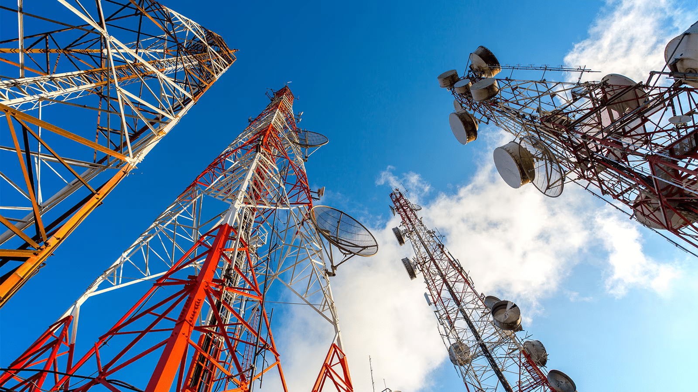

Enlace: {{settingsService.linkSettings.linkName}}
Perfil de Elevación

Perfil de elevaciónEnlaces de microondas
Un perfil de elevaciones es una herramienta utilizada para diferenciar alturas,
porcentajes de pendientes, medir segmentos de una ruta, una montaña, la cuenca de un río, etc.
Estadisticas del enlace:
Punto inicial
Punto final
Frecuencia
Seleccionar Frecuencia
MHz
Altura de antenas
Generar Gráfica
Gráfico de elevación
Procedimiento:
Generar gráfica
1.- Selecciona los dos puntos en el mapa donde quieres graficar el
perfil de elevación.
2.- Seleccionados los puntos, presiona el botón "Generar gráfica"
para obtener mostrar el gráfico.
Azimuth antenas
Antena 1:
{{initialAntennaAzimuth}}°
Antena 2:
{{finalAntennaAzimuth}}°
DESPEJE
Recomendación:
No existe despeje en el enlace, es recomendable evaluar la altura de las
antenas (aumentar altura) o la posición de las mismas.
PUNTOS DE REFLEXIÓN
Recomendación:
Debes prestar atención a los posibles puntos de reflexión
a lo largo del enlace, ya que pueden aportar ganacias constructivas
o destructivas a la antena receptora.
PUNTOS DE OBSTRUCCIÓN
Recomendación:
Es importante que revises la configuracion del enlace, ya que existen puntos de obstruccion en
el 60% de la primera zona de fresnel, por lo que esta afectada la factilidad del radienlace.